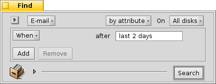
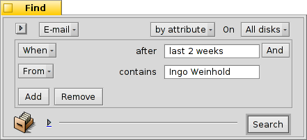

Українська
Українська Català
Català Deutsch
Deutsch English
English Español
Español Français
Français Italiano
Italiano Magyar
Magyar Polski
Polski Português
Português Português (Brazil)
Português (Brazil) Română
Română Slovenčina
Slovenčina Suomi
Suomi Svenska
Svenska 中文 ［中文］
中文 ［中文］ Русский
Русский 日本語
日本語| Зміст |
|
Поштова система Haiku Використання призначених для користувача станів Використання запитів Більше порад |
Семінар: Керування поштою
Цей семінар розказує як правильно керувати поштовою службою. Передбачається що сервіс правильно зконфігурований у налаштуваннях Пошта (E-Mail) і Ви знайомі з основними функціями програми Пошта (Mail).
 Поштова система Haiku
Поштова система Haiku
Якщо ви прийшли в Haiku з інших операційних систем, ви, ймовірно, використовували програми MS Outlook або Thunderbird Mozilla. Ви повинні були налаштувати їх, ввівши всі дані на поштовому сервері адресу і т.д., і вони використовують свої власні контакти бази даних. Вони дбали про надсилання та отримання електронної пошти та зберігали їх в якомусь великому спеціальному файлі. Зміна вами клієнта електронної пошти викликатиме клопіт з відправкою/отриманням та конвертацією листів. Використання більше одного клієнта паралельно для перевірки, теж створюватиме додаткову метушню.
Поштова система Haiku інакша. Вона складається з окремих невеликих модулів.
Додаток mail_daemon піклується про звязок з вашими поштовими серверами. Налаштування Пошта (E-Mail) центральна точка конфігурування ваших облікових записів, тут ви також можете встановити частоту перевірки пошти, для прикладу.
Кожне повідомлення як отримане так і відправлене електронною поштою зберігається як один файл, з інформацією у заголовку ( відправник, тема, дата) і станом (нове, відповідь, переслане) у BFS атрибутах. Це дає можливість їх пошуку / фільтрації за швидкими запитами Haiku.

Кожне повідомлення є окремим файлом перегляд або пошук якого не є сладнішим ніж перегляд зображень за допомогою Переглядача зображень (ShowImage). У відкритому вікні Tracker Ви можете переміщатись вибираючи файл для перегляду за допомогою кнопок попередній/наступний.
Оскільки вони є незалежними файлами, то використання як переглядача пошти додатку Haiku Пошта (Mail) не повинно викликати жодних проблем.
Крім того, формування нового повідомлення просто створює ще один файл, який передається mail_daemon'у для здійснення відправки. Керування контактами покладено на додаток Особи (People).
Другими словами, де інші поштові клієнти роблять все, від спілкування з поштовими серверами для забезпечення відправки всіх ваших листів до їх пошуку та фільтрації, Haiku використовує ланцюг невеликих інструментів та загального керування файлами:
Мail_daemon відправляє/отримує повідомлення та зберігає їх як звичайні файли.
Вікна Tracker'а та запити знаходять і показують повідомлення.
Програма Пошта (Mail) допомагає переглядати повідомлення та створювати нові на основі загальносистемного додатку керування контактами Особи (People).
Використання Tracker'а та запитів для обслуговування пошти надзвичайно потужна ідея. Отриманий досвід можна використати для вирішення інших проблем зв'язаних з обробкою файлів. Будь то зображення, музика, відео, контакти або будь-які інші документи, використання Tracker'а лежить в основі керування файлами.
Крім того, поліпшення в будь-якій з цих ланок системи принести користь не тільки електронній пошті, але й усім програмам, які використовують їх.
Використання призначених для користувача статусів
При отриманні нових повідомлень деколи виникає бажання переглянути їх пізніше з метою детальнішого ознайомлення. Якщо вибрати у поштовому меню то ваш запит збережеться у "Нові повідомлення (New messages)", речі мають тенденцію накопичуватися, таким чином ...
Одне з можливих рішень, звичайно, просто почати відповідь негайно і зберегти його як чернетку. Але якщо ви не бажаєте відповідати, а просто хочете повторно прочитати його пізніше, то це не буде доброю ідеєю.

Краще використайте для створення нового статусу та використання його для класифікації повідомлень. Для прикладу можна вибрати статус "Пізніше (Later)", і відповісти коли матимете більше часу.
Або використовувати різні статуси для певних проектів. Наприклад, я створив статус "HUG" (for "Настанови користувачеві") під яким я збираю повідомлення стосовно змісту, коммітів, цікавих ідей, зміни коду та інших важливих аспектів.
У будь-якому випадку намагайтесь зберегти ім'я статусу коротким. Таким чином, щоб він завжди поміщався у колонці "Статус" Tracker'а звичайної ширини.
Вам не потрібно відкривати програму Пошта (Mail) для встановлення статусу. З Tracker додатків Помітити як прочитане (Mark as Read) та Помітити як... (Mark as...) ви можете вибрати кілька повідомлень і встановити їх статус за один прохід.
Використання запитів
Звичайно можна вказати теку для зберігання усієї пошти, щоб при відкритті мати доступ до повідомлень. Але з часом вона настільки розростеться і її відкриття займатиме через необхідність відкриття атрибутів та сортування дуже багато часу. Крім того слідкувати за старезними листами від нігерійських принців та іншими дрібними неприємностями надзвичайно швидко набридає ...
Запити (Queries), на допомогу!
Використовуючи запити Ви можете значно скоротити перегдяд повідомлень. Насправді, значок поштової скриньки у Deskbar використовує запити.

Підменю робить запит для статусу "Чернетка (Draft)", який встановлює Пошта (Mail) при збереженні повідомлення.
та є тільки посиланнями на звичайні папки (що не дуже корисно, на мій погляд).
Підменю виводить запит для листів зі статусом "Нові (New)" (той же запит використовується для зміни значка поштової скриньки, щоб показати наявність листів у ній, до речі).
Ви також можете додати свої власні запити (або теки, додатки, скрипти і т.д.) до цього контекстного меню , помістивши їх або посилання на них до ~/config/settings/Mail/Menu Links.
Приклади запитів
Ось кілька прикладів використання запитів:
 Шукає всі повідомлення за вибраним статусом "Пізніше (Later)". |
 Шукає всі повідомлення за останні 2 дні. |
|  Шукає всі повідомлення від Ingo Weinhold'а за останні 2 тижня. |
 Шукає всі пости від Haiku commit list за останні 12 годин. |
Більше порад
Якщо ви не збережете запит як "Запит (Query)" але як "Шаблон запиту (Query template)", то замість вікна з результатами буде показано вікно Пошук... (Find...). Таким чином, ви можете легко змінити рядок пошуку, наприклад, для теми або відправника, або змінити граничний термін з "2 днів" на "3 дні".
Активація "випереджаючого фільтрування" в Налаштуваннях Tracker'а дозволить прискорити фільтрування результатів запиту. Часто цього досить, щоб опитати всі листи за останні 3 дні і вимкнути фільтрацію. Великою перевагою є те, що ви не повинні точно вказувати атрибут для пошуку, оскільки всі відображення беруться до уваги при фільтрації.